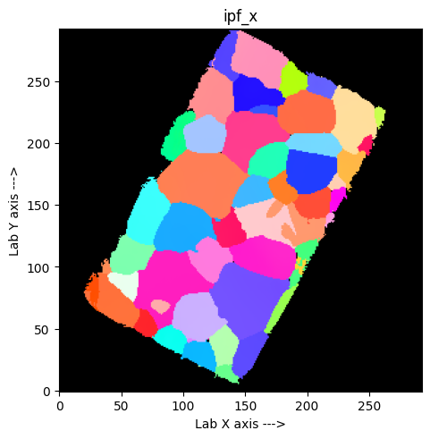
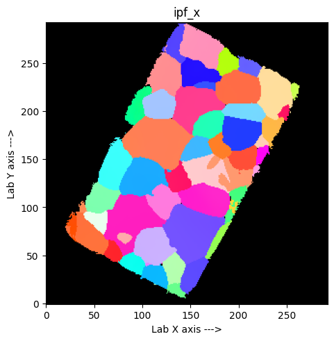

4_visualise#
Point-by-point refined map visualisation notebook#
Written by Haixing Fang, Jon Wright and James Ball
Date: 21/02/2025
This notebook will convert the (potentially) multi-valued results of a point-by-point strain refinement process to a single-valued ‘TensorMap’ with many useful export formats, like H5, Paraview XDMF, and MTEX CTF.
Show code cell source
import os
os.environ['OMP_NUM_THREADS'] = '1'
os.environ['OPENBLAS_NUM_THREADS'] = '1'
os.environ['MKL_NUM_THREADS'] = '1'
Show code cell source
exec(open('/data/id11/nanoscope/install_ImageD11_from_git.py').read())
Change :
the dataset name (dset_path)
the phase name (phase_str)
Show code cell source
# this cell is tagged with 'parameters'
# to view the tag, select the cell, then find the settings gear icon (right or left sidebar) and look for Cell Tags
# python environment stuff
PYTHONPATH = setup_ImageD11_from_git( os.path.join( os.environ['HOME'],'Code', 'Tutorial', 'SCRIPTS'), 'ImageD11' )# ( os.path.join( os.environ['HOME'],'Code'), 'ImageD11_git' )
# dataset file to import
dset_path = '../FeAu_0p5_tR_nscope/FeAu_0p5_tR_nscope_top_200um/FeAu_0p5_tR_nscope_top_200um_dataset.h5'
# which phase to index
phase_str = 'Fe'
# the minimum number of peaks you want a pixel to have to be counted
min_unique = 50
# Setting path via:
sys.path.insert(0, /home/esrf/ljegou/Code/Tutorial/SCRIPTS/ImageD11 )
# Running from: /home/esrf/ljegou/Code/Tutorial/SCRIPTS/ImageD11/ImageD11/__init__.py
Show code cell source
import numpy as np
from matplotlib import pyplot as plt
import matplotlib.cm as cm
from matplotlib.colors import Normalize
from ImageD11.grain import grain
from ImageD11 import unitcell
import ImageD11.sinograms.dataset
from ImageD11.sinograms.point_by_point import PBPMap, PBPRefine
from ImageD11.sinograms.tensor_map import TensorMap
from ImageD11.nbGui import nb_utils as utils
# %matplotlib ipympl
Load data#
The dataset
The phases
Dataset#
Show code cell source
ds = ImageD11.sinograms.dataset.load(dset_path)
print(ds)
dataroot = "/data/id11/inhouse2/test_data_3DXRD/S3DXRD/FeAu/RAW_DATA"
analysisroot = "/data/id11/inhouse2/test_data_3DXRD/S3DXRD/FeAu/PROCESSED_DATA/20250626_LJ"
sample = "FeAu_0p5_tR_nscope"
dset = "top_200um"
shape = ( 275, 1448)
# scans 275 from 1.1 to 275.1
Phases#
If the parameter file was a json, we can access the unit cells via ds.phases.unitcells
Show code cell source
ds.phases = ds.get_phases_from_disk()
ds.phases.unitcells
{'Au': Au | [ 4.005 4.005 4.005 90. 90. 90. ] | 225,
'Fe': Fe | [ 2.8694 2.8694 2.8694 90. 90. 90. ] | 229,
'B2': B2 | [ 3.8867 3.8867 3.8867 90. 90. 90. ] | 221,
'CeO2': CeO2 | [ 5.41143 5.41143 5.41143 90. 90. 90. ] | F}
Show code cell source
ref_ucell = ds.phases.unitcells[phase_str]
print(ref_ucell)
Fe | [ 2.8694 2.8694 2.8694 90. 90. 90. ] | 229
Point-by-point refined map#
Loading the refined map
!cp -r ../FeAu_0p5_tR_nscope/FeAu_0p5_tR_nscope_top_200um/FeAu_0p5_tR_nscope_top_200um_dataset.h5 FeAu_0p5_tR_nscope/FeAu_0p5_tR_nscope_top_200um/
Show code cell source
refmanpath = os.path.splitext(ds.refmanfile)[0] + f'_{phase_str}.h5'
refine = PBPRefine.from_h5(refmanpath)
refine.refinedmap.plot_nuniq_hist()
Loading peaks
Loading input map
Loading output map
Choose the minimum number of peaks you want a pixel to have to be counted : min_unique
Show code cell source
refine.refinedmap.choose_best(min_unique)
refine.refinedmap.plot_best(min_unique)

Make TensorMap#
Now make a TensorMap from the refined map so we can plot and export
ID map#
First let’s make a phase id map from our pbpmap
Show code cell source
phase_ids = TensorMap.recon_order_to_map_order(np.where(refine.refinedmap.best_nuniq > min_unique, 0, -1))
eps_sample = TensorMap.recon_order_to_map_order(refine.refinedmap.best_eps)
tmap = TensorMap.from_pbpmap(refine.refinedmap, steps=(1, ds.ystep, ds.ystep), phases={0: ref_ucell})
tmap['phase_ids'] = phase_ids
tmap['eps_sample'] = eps_sample
tmap.get_ipf_maps()
tmap.plot('nuniq')
tmap.plot('ipf_x')
tmap.plot('ipf_y')
tmap.plot('ipf_z')
eul = tmap.euler # trigger calculation of all the maps
 



Strains#
Plot the strains inside the major phase grains
Show code cell source
fig, axs = plt.subplots(3,3, sharex=True, sharey=True, layout='constrained', figsize=(10,10))
cmap = cm.get_cmap('RdBu_r')
normalizer = Normalize(-1e-3, 1e-3)
im = cm.ScalarMappable(norm=normalizer, cmap=cmap)
for i in range(3):
for j in range(3):
axs[i,j].imshow(tmap.eps_sample[0, ..., i, j], origin="lower", cmap=cmap, norm=normalizer, interpolation='nearest')
axs[i,j].set_title(f'eps_{i+1}{j+1}')
fig.supxlabel('Lab X axis --->')
fig.supylabel('Lab Y axis --->')
fig.colorbar(im, ax=axs.ravel().tolist())
plt.show()
/tmp/ipykernel_534070/3744789049.py:2: MatplotlibDeprecationWarning: The get_cmap function was deprecated in Matplotlib 3.7 and will be removed in 3.11. Use ``matplotlib.colormaps[name]`` or ``matplotlib.colormaps.get_cmap()`` or ``pyplot.get_cmap()`` instead.
cmap = cm.get_cmap('RdBu_r')

You can check what is the mean unitcell
Show code cell source
mean_a = np.nanmean(tmap.unitcell[0,:,:,0])
mean_b = np.nanmean(tmap.unitcell[0,:,:,1])
mean_c = np.nanmean(tmap.unitcell[0,:,:,2])
print('Mean unit cells : a = {:.4f}, b = {:.4f}, c = {:.4f}'.format(mean_a,mean_b,mean_c))
Mean unit cells : a = 2.8695, b = 2.8700, c = 2.8698
You can check what is the mean stress in the sample. If you expect no stress, this is the moment where you need to adjust the cell parameters.
Show code cell source
mean_e11 = np.nanmean(tmap.eps_sample[0,:,:,0,0])
mean_e22 = np.nanmean(tmap.eps_sample[0,:,:,1,1])
mean_e33 = np.nanmean(tmap.eps_sample[0,:,:,2,2])
print('Mean stress : e11 = {:.4e}, e22 = {:.4e}, e33 = {:.4e}'.format(mean_e11,mean_e22,mean_e33))
Mean stress : e11 = 1.8531e-04, e22 = 1.3598e-04, e33 = 7.2368e-06
Ajust the cell parameters to get 0 stress#
This is function to compute the volume of the cell define by its lattice parameters
Show code cell source
def cellvolume(latticepar):
"""
calculate unit cell volume [angstrom^3]
"""
a = latticepar[0]
b = latticepar[1]
c = latticepar[2]
calp = np.cos(np.deg2rad(latticepar[3]))
cbet = np.cos(np.deg2rad(latticepar[4]))
cgam = np.cos(np.deg2rad(latticepar[5]))
angular = np.sqrt(1 - calp**2 - cbet**2 - cgam**2 + 2*calp*cbet*cgam)
Vcell = a*b*c*angular
return Vcell
We compute and plot the average volume of all the pixels from this phase, and the c/a ratio (this is mainly for hexagonal phases)
Show code cell source
Vcells = []
ca_ratios = []
for i in range(tmap.unitcell.shape[1]):
for j in range(tmap.unitcell.shape[2]):
if not np.isnan(tmap.unitcell[0,i,j,:]).any():
Vcell = cellvolume( tmap.unitcell[0, i, j, :] )
ca_ratios.append( tmap.unitcell[0,i,j,2] / np.mean(tmap.unitcell[0,i,j,0:2]) )
Vcells.append(Vcell)
We plot the the average volume.
Show code cell source
f, a = plt.subplots(1, 2, figsize=(12, 6))
a[0].hist(ca_ratios, bins=200);
a[1].hist(Vcells, bins=200);
a[0].set(title='c/a ratio');
a[1].set(title='cell volume');
print(np.median(ca_ratios), np.mean(ca_ratios))
print(np.median(Vcells), np.mean(Vcells))
1.0000208956368486 1.0000190989706923
23.631515925854973 23.633460187342713
We can play with new_cell value to test different Volume cell until the difference between V0 and Vcells are close.
Then update the parameter file with this new_cell value and re run all the notebooks.
Show code cell source
new_cell = 2.8697
V0 = cellvolume([new_cell, new_cell, new_cell, 90, 90, 90] )
print(V0 - np.median(Vcells), V0 - np.mean(Vcells))
0.0009746390180254139 -0.0009696224697144373
if we have a previous tomographic TensorMap, we can try to get the labels map too:
Show code cell source
try:
tmap_tomo = TensorMap.from_h5(ds.grainsfile, h5group='TensorMap_' + phase_str)
tmap.add_map('labels', tmap_tomo.labels)
except (FileNotFoundError, OSError, KeyError):
# couldn't find one, continue anyway
pass
Export#
TensorMap#
save the refined TensorMap to disk.
If you already ran and saved the results of the refinement notebook for this specific phase (phase_str), you have to delete the existing file XXX_refined_tmap_{phase_str}
Show code cell source
# refined_tmap_path = os.path.join(ds.analysispath, f'{ds.sample}_{ds.dset}_refined_tmap_{phase_str}.h5')
# tmap.to_h5(refined_tmap_path)
# tmap.to_paraview(refined_tmap_path)
MTEX#
you can also do an MTEX export if you like:
Show code cell source
# refined_ctf_path = os.path.join(ds.analysispath, f'{ds.sample}_{ds.dset}_refined_tmap_{phase_str}.ctf')
# tmap.to_ctf_mtex(refined_ctf_path, z_index=0)
Show code cell source
ds.save()